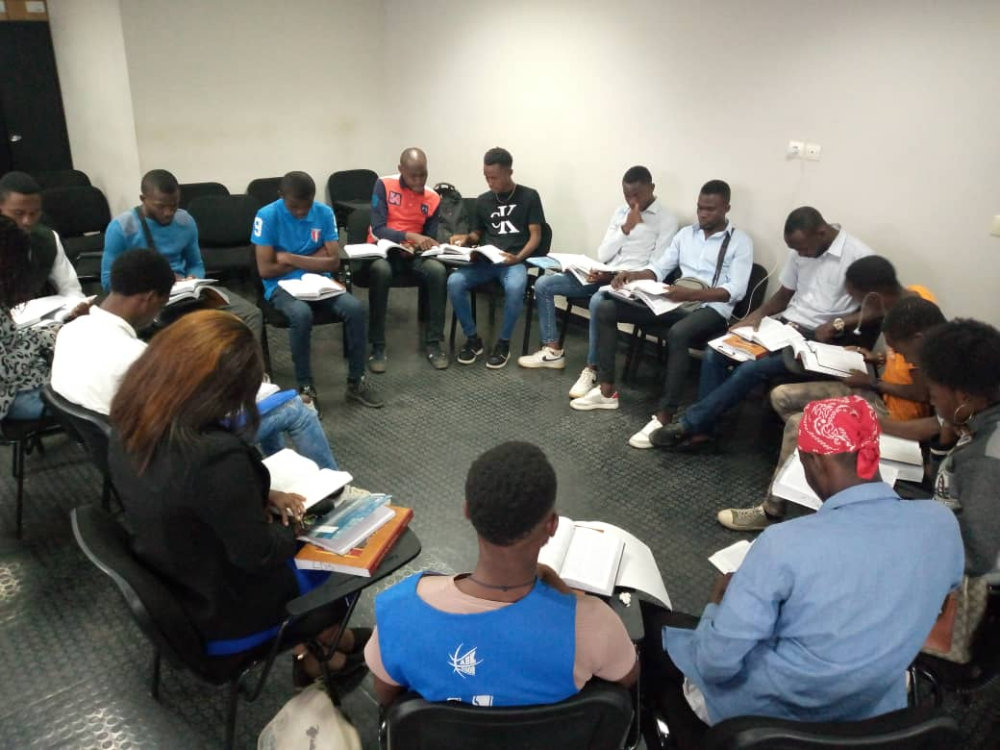
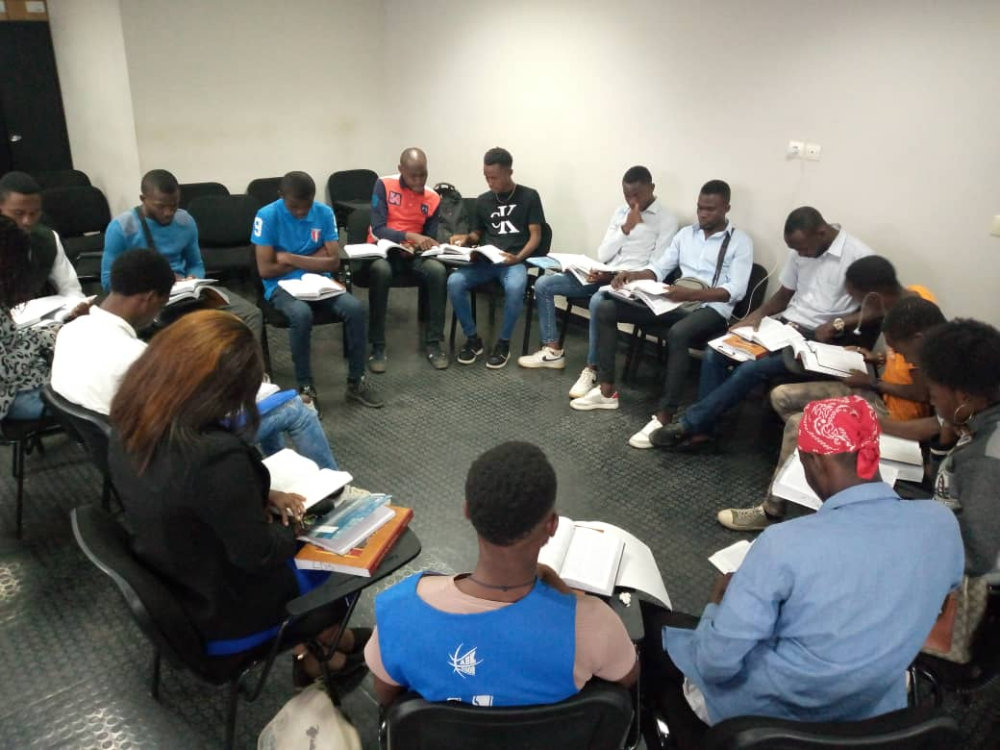

About Me
Welcome to My Personal Website. I am so happy to tell you about me through this website, I hope you will enjoy knowing about me! I am a young boy born and raised in Congo Brazzaville and I am 22 years old. I like to play Basketball when I am free form my daily occupations. I am from a family of 7 people where I am the first boy and I love my family so much. I like knowing new things about our Lord Jesus Christ and His teachings. I love to go to church and meet new people every sunday. I love the Gospel of Jesus Christ. My favorite food is chicken 'fried chicken with saucce' I also like to eat bananas, those are my favorite fruits. When it comes to cook, I do not really know how to cook, but I like to cook even though I do not cook very well. I love being taught to cook, because one of my best wishes is to know how to cook someday and do it for my family.


Some fitness


The church of Jesus Christ of latter day saints


Awsome
 
